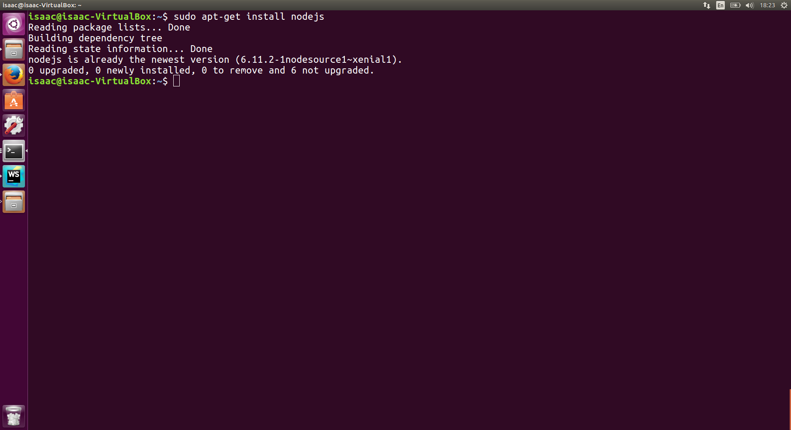

Es un nodo de trabajo especifico en donde mantienes una comunicacion especial con los recusos que ofrece AWS.
Yo lo veo como un Setup de un proyecto predeterminado ya sea Videojuegos, para esto voy a necestar gamelift s3 y otros componentes de AWS
entonces hago un template de CloudFormation (una estructura base con configuraciones prederteminadas por el equipo de desarrollo) asi de esta forma
el proyecto lleva un desarrollo evolutivo por poner una diferencia.
Ejemplo:
Type: "AWS::S3::Bucket"
Properties:
AccessControl: PublicRead
BucketName: Videojuegos
WebsiteConfiguration:
ErrorDocument:404.html
IndexDocument:Index.html
Hello World Example.
1er paso: Instalar NodeJs con el siguiente comando desde la Terminal de comandos $ sudo apt-get install nodejs y nos aparecera lo siguiente:

2do paso: revisar si NodeJs se instalo revisando desde la Terminal de comandos --> $ nodejs -v y nos aparecera lo siguiente:
3er paso: crear un archivo con la Terminal de comandos --> $ touch Hellowordl.js el cual se generara en tu directorio home (si no cambiaste la ruta claro)
4to paso: pasaremos a modificar el archivo ya sea con gedit
como en esta ocacion desde la Terminal de comandos $ vim Helloworld.js
5to paso: Escribiremos lo siguiente en el archivo Helloworld.js --> console.log("Hello World"); guardamos el archivo.
6to paso: Desde la Terminal de Comandos ejecutaremos lo siguiente --> $ node Helloworld.js y obtendremos lo siguiente:
1er paso: Instalar NodeJs con el siguiente comando desde la Terminal de comandos $ sudo apt-get install nodejs y nos aparecera lo siguiente:
2do paso: Instalar npm desde la Terminal de comandos $ sudo apt-get install npm
3er paso: Instalar npm install aws-sdk
4to paso: Ahora, siempre que necesitemos hacer uso de aws-sdk , en tu archivo .js pondremos lo siguiente:
var AWS = require('aws-sdk');
var s3 = new AWS.S3();
//inicializacion de parametros
var params ={
Bucket:"sosaglez",
Key:"index.html"
};
//llamada a s3
s3.getObject(params,function(err,data){
if(err)
console.log(err,err.stack);
else
console.log(data.data modified)
Me quedo con la idea del video de What are Microservices? ya que por las imagenes llega al punto
de lo que en verdad son los microservicios y su arquitectura Monolitica (solo hace 1 cosa tu servicio) y esta ventaja
es la deficion de tu software de los recursos que estas usando, la desventaja es que al escalar puede llegar ser erroneo
y mas como algunos programadores piensan que funciona. Y al tener cada servicio aparte (lo cual es un ventaja en grupos grandes)
es que los recurso empiezan hacer en paraelo o asycrona donde debes de tener un muy buen desarrollo en tus pilares.
3.Back to (the wrong) School
R= Sinceramente hay momentos donde pierdes todo el sentido humano al realizar una actividad o accion cuando alguien
toma posesion de ti, en el caso donde se menciona que el joven empezo a tener este rol de trabajador
(nada fuera de lo normal, en la actualidad sigue sucediendo) no solo estas creando un pensamiento nuevo, si no que
estas alterando el ADN de los siguientes jovenes, siento que esto se da por las necesiades humanas
de desarrollar y despertar otras zonas del cerebro humano para reliar una actividad y darse cuenta que el "Jefe" fue
remplazad por un Lider y ahora ese Lider esta cambiando a Compartir Ideas e ir evolucionando a la par.
Y el tomar ventaja es tener empatia por el otro y conocer su trabajo , ya que de el puedes aprender o dejarlo para
formar una sociedad.
4. What is school for?
R= Lo cierto es que en la escuela puedes relacionarte y encontrar un guia para formar tu vida, independientemente que
para alguien es un negocio y para otros es un trabajo que no quieren. Tenemos la oportunidad de poner nuetras ideas ante
una sociedad de la cual comparte caracteristicas similares y tener otro pensamiento.
Yo siempre he visto la escuela como un 20% y tu eres el otro 80%.
10. Frederick J.Kelly and your nightmares
Yo lo veo como una forma de limitar a la gente en Sabes, No sabes , Casi lo sabes , y tomando en cuenta que solo se basa
en una inteligencia multiple la evaluacion de toda escuela, el reducir y enfatisar en tu mentalidad (que por probabilidad)
puedes tener una opcion mas alta que en verdad demostrar que sabes; hace su trabajo la opcion multiple
que es cerrarte tu vision para solo decidir por la mejor respusta entre 4 o 3 posibles opciones.
12. Is It Possible to teach attitudes?
R=Creo que hay 2 tipos de personalidades hoy en dia, la social ( un actor, un cantante ...) y la persona que ves dia dia
superar sus metas y/o problemas; aunque la escuela que es un lugar donde pasaras mas de 16 aos y muchas veces el maestro mantiene
una mentalidad del pasado tus aptitudes son desarrolladas por la gente que ves batallar y te platica de su vida, incluso de uno
el entender a ese indiviuo es es la mejor aptitud que puedes formar.
13. Which came first, the car of the gas station?
R=Siento que aqui entra la parte de Evolve en nuestros proyectos, no importa quien es primero o segundo,
siempre necesitaras cambiar algo o crear algo sin importar el orden, todo tiene que ver con la necesidad acutal.
17.- Reinventing school
Sinceramente este es mi proyecto de vida, y entiendo el enfoque de este texto, pero yo siempre he dicho que el cambio esta
en crear nuevas formas de enlazar y comunicar el pensar del estudiante con la mente de sabiduria (maestro). Evaular no solo con opciones
multiples, si no recrear escenas de un ambiente profesional y que de esta forma el alumno o trabajador pueda compilar la informacion
y almacenarla con una header de experencia.
 3er paso: crear un archivo con la Terminal de comandos --> $ touch Hellowordl.js el cual se generara en tu directorio home (si no cambiaste la ruta claro)
3er paso: crear un archivo con la Terminal de comandos --> $ touch Hellowordl.js el cual se generara en tu directorio home (si no cambiaste la ruta claro)

 4to paso: pasaremos a modificar el archivo ya sea con gedit
4to paso: pasaremos a modificar el archivo ya sea con gedit
 como en esta ocacion desde la Terminal de comandos $ vim Helloworld.js
como en esta ocacion desde la Terminal de comandos $ vim Helloworld.js
 6to paso: Desde la Terminal de Comandos ejecutaremos lo siguiente --> $ node Helloworld.js y obtendremos lo siguiente:
6to paso: Desde la Terminal de Comandos ejecutaremos lo siguiente --> $ node Helloworld.js y obtendremos lo siguiente:

 2do paso: Instalar npm desde la Terminal de comandos $ sudo apt-get install npm
2do paso: Instalar npm desde la Terminal de comandos $ sudo apt-get install npm
 3er paso: Instalar npm install aws-sdk
3er paso: Instalar npm install aws-sdk
 4to paso: Ahora, siempre que necesitemos hacer uso de aws-sdk , en tu archivo .js pondremos lo siguiente:
4to paso: Ahora, siempre que necesitemos hacer uso de aws-sdk , en tu archivo .js pondremos lo siguiente: